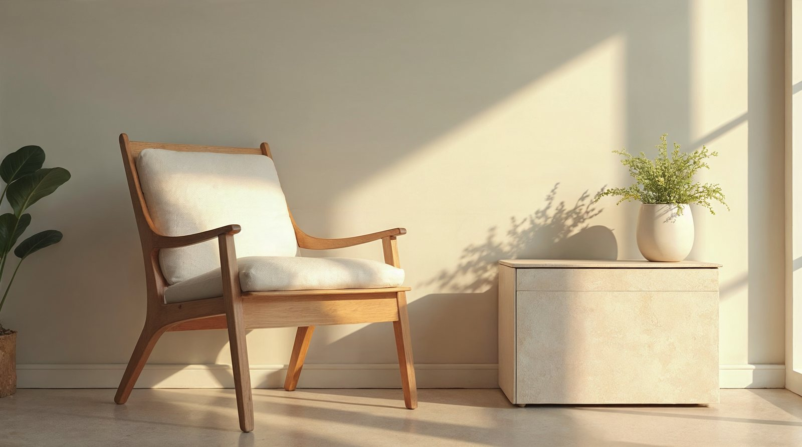
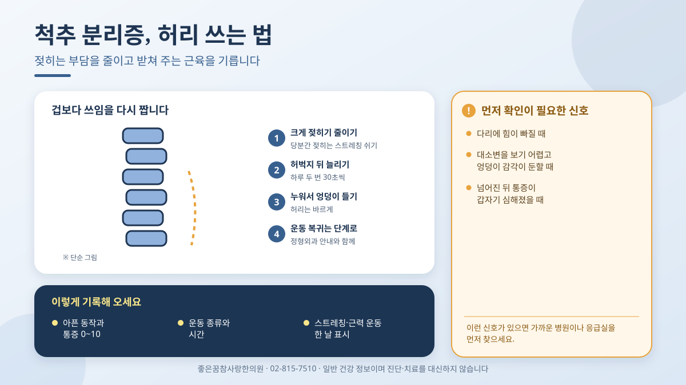

이종호 한의사 감수좋은꿈참사랑한의원 대표원장 (한의사 면허번호 19769)발행 2026-11-26 · 수정 2026-11-26
이 글의 차례
운동을 좋아하는 학생이 허리를 짚고 진료실 의자에 앉습니다. 축구 시합이 끝나면 허리 아래가 뻐근하고, 공을 차려고 허리를 젖힐 때마다 찌릿하다고 합니다. 함께 오신 보호자분이 정형외과에서 받은 결과지를 꺼내 놓으십니다. '척추 분리증'이라는 낯선 말이 적혀 있습니다.
어른들도 비슷한 이야기를 들고 오십니다. 오래전부터 허리가 가끔 아팠는데 이번에 처음 사진을 찍어 보니 분리증이 있었다고, 뼈가 떨어져 있다는데 이대로 괜찮은 거냐고 물으십니다. '뼈가 떨어졌다'는 말이 주는 무게 때문에 움직이는 것조차 겁이 난다고 하십니다.
저는 이럴 때 먼저 분리증이 무엇인지부터 차근차근 설명드립니다. 이름은 무섭게 들리지만, 분리증이 있어도 큰 불편 없이 지내시는 분이 많고, 어떻게 허리를 쓰느냐에 따라 일상이 훨씬 편해질 수 있습니다. 중요한 것은 지금 허리가 어느 단계에 있고, 어떤 동작이 부담이 되는지를 아는 것입니다.
이 글에서는 척추 분리증이 무엇이고 왜 생기는지, 척추전방전위증이나 다른 허리 통증과 어떻게 다른지, 운동과 생활은 어떻게 이어 가면 좋은지, 그리고 한의원에서 함께 살필 수 있는 것을 차례로 정리했습니다.
척추 분리증은 어떤 상태인가요
허리뼈 하나는 앞쪽의 둥근 몸통과 뒤쪽의 고리 모양 부분으로 이루어져 있습니다. 뒤쪽 고리에는 위아래 뼈가 맞물리는 작은 관절이 있고, 그 관절과 관절 사이를 이어 주는 가는 다리 같은 부분이 있습니다. 척추 분리증은 이 가는 부분에 금이 가거나 떨어져 있는 상태를 말합니다.
분리증은 허리뼈 가장 아래쪽 마디에서 가장 흔하게 생깁니다. 이곳은 허리와 골반이 만나는 자리라 체중과 움직임의 부담이 가장 많이 모이는 곳입니다. 한쪽만 생기기도 하고 양쪽에 함께 생기기도 합니다.
분리증이 있다고 해서 모두 아픈 것은 아닙니다. 다른 이유로 사진을 찍다가 우연히 알게 되는 분도 많습니다. 반대로 허리를 젖히거나 비틀 때, 오래 서 있을 때 허리 아래가 뻐근하고 찌르는 통증으로 나타나기도 합니다.
왜 척추 분리증이 생길까요
분리증은 한 번의 큰 사고보다는 같은 동작이 오랫동안 반복되면서 생기는 경우가 많습니다. 뼈의 가는 부분에 작은 부담이 쌓이다가 결국 금이 가는, 일종의 피로 골절에 가깝다고 이해하시면 됩니다.
- 허리를 크게 젖히는 동작이 많은 운동을 어릴 때부터 해 온 경우
- 축구, 야구, 배구, 체조, 무용처럼 젖히고 비트는 동작이 반복되는 경우
- 성장기에 운동량을 갑자기 늘린 경우
- 가족 가운데 분리증이 있는 분이 있어 뼈 모양이 비슷한 경우
- 허벅지 뒤쪽이 짧고 배 근육이 약해 허리가 젖혀진 채 버티는 경우
특히 성장기 청소년은 뼈가 아직 단단히 자리 잡기 전이라 반복되는 부담에 더 약합니다. 그래서 운동을 열심히 하는 학생이 허리 아래 통증을 오래 호소한다면 분리증을 한 번쯤 생각해 보게 됩니다. 어른의 분리증은 어릴 때 생긴 것이 늦게 발견되는 경우가 많습니다.
척추전방전위증과는 어떻게 다른가요
분리증이 있으면 위쪽 허리뼈를 뒤에서 붙잡아 주는 힘이 약해집니다. 그래서 시간이 지나며 위쪽 뼈가 아래쪽 뼈보다 앞으로 조금 미끄러지는 경우가 있는데, 이것을 척추전방전위증이라고 부릅니다. 분리증이 원인이 되어 전방전위증으로 이어질 수 있는 것입니다.
하지만 분리증이 있는 분이 모두 뼈가 밀리는 것은 아닙니다. 밀리더라도 아주 조금에 머물러 오랫동안 그대로인 경우가 많습니다. 결과지에 '전위'나 '밀림'이라는 표현이 함께 있는지, 그 정도가 몇 단계인지를 확인하시면 지금 상태를 이해하는 데 도움이 됩니다.
나이가 들어 디스크와 관절이 약해지면서 생기는 퇴행성 전방전위증은 분리증 없이도 생길 수 있습니다. 같은 '밀렸다'는 말이라도 원인이 달라서 생활에서 조심할 부분과 운동 방향이 조금씩 다릅니다. 들으신 진단명을 정확히 알려 주시면 그에 맞춰 살핍니다.
다른 허리 통증과 구분해 볼 점
분리증 통증은 보통 허리 아래 가운데나 한쪽에 머무르고, 허리를 뒤로 젖히거나 한쪽 다리로 서서 젖힐 때 커지는 경우가 많습니다. 운동 중이나 운동 직후에 심해졌다가 쉬면 가라앉는 흐름을 보이기도 합니다.
디스크 문제는 숙이거나 오래 앉아 있을 때 불편이 커지는 경우가 많고, 근육을 삐끗한 통증은 특정 동작 뒤 갑자기 시작되어 며칠에 걸쳐 가라앉는 경우가 많습니다. 분리증은 이와 달리 같은 동작에서 되풀이되는 모습을 보입니다.
뼈가 앞으로 밀린 정도가 크면 신경이 지나는 길이 좁아져 엉덩이나 다리로 저림이 내려가기도 합니다. 다리 저림이 있다면 어디까지 내려가는지, 걸을 때 심해지는지를 함께 알려 주세요.
청소년과 어른은 조금 다르게 봅니다
성장기 학생이 허리 아래 통증을 호소하고 분리증이 막 생긴 시기라면, 정형외과에서 운동을 일정 기간 쉬도록 안내받는 경우가 많습니다. 금이 간 뼈가 아물 수 있는 시기일 수 있어서, 이 안내를 잘 따르는 것이 중요합니다. 운동을 언제 다시 시작할지는 정형외과 선생님과 상의해서 정하시는 것이 좋습니다.
어른은 이미 오래전에 생긴 분리증이 자리 잡은 경우가 많습니다. 이때는 뼈를 붙이는 것보다 허리를 받쳐 주는 근육의 힘을 기르고, 젖히는 부담을 줄이는 생활로 통증이 덜한 날을 늘려 가는 쪽에 무게를 둡니다.
어느 경우든 운동을 완전히 멀리하실 필요는 없습니다. 허리에 부담을 덜 주는 방식으로 움직임을 이어 가는 것이 오히려 허리를 편하게 하는 데 도움이 됩니다. 다만 그 시기와 강도는 사람마다 달라서 함께 정하는 것이 좋습니다.

앉고 서고 드는 자세에서 챙길 것
분리증이 있는 허리는 젖히는 동작 못지않게 오래 같은 자세로 버티는 것을 힘들어합니다. 의자에 앉을 때는 엉덩이를 등받이 끝까지 붙이고, 허리 뒤에 작은 쿠션을 대어 허리가 지나치게 휘거나 구부정해지지 않게 해 주세요. 발바닥은 바닥에 편하게 닿는 높이가 좋습니다.
서 있을 때는 배를 앞으로 내밀고 허리를 젖힌 자세가 되기 쉽습니다. 거울 앞에서 옆모습을 한 번 보시고, 배꼽을 살짝 등 쪽으로 당기는 느낌으로 서 보세요. 처음에는 어색하지만 며칠만 의식해도 허리 아래의 뻐근함이 덜하다고 하시는 분이 많습니다.
물건을 들 때는 허리를 숙이기보다 무릎과 엉덩이를 굽혀 몸 가까이에서 들어 올리세요. 들어 올린 상태에서 몸을 비틀지 말고, 발을 옮겨 방향을 바꾸는 것이 허리 뒤쪽의 부담을 덜어 줍니다.
먼저 이렇게 여쭙니다
처음 오시면 저는 대략 이런 순서로 여쭙니다. 미리 떠올려 오시면 이야기가 훨씬 수월해집니다.
- 언제 처음 분리증이 있다는 말을 들으셨고, 어떤 검사를 받으셨나요?
- 뼈가 앞으로 밀렸다는 설명도 함께 들으셨나요?
- 어떤 동작에서 아프신가요? 젖힐 때, 숙일 때, 오래 서 있을 때 중 어떤가요?
- 지금 하고 있거나 예전에 오래 한 운동이 있나요?
- 다리로 저림이 내려가거나 힘이 빠지는 느낌이 있나요?
- 운동을 쉬라는 안내를 받으셨다면 언제까지인가요?
학생이라면 운동 일정과 시합, 학업 때문에 앉아 있는 시간도 함께 여쭙니다. 운동을 쉬는 동안 마음이 조급해지는 경우가 많아서, 쉬는 기간에 해 볼 수 있는 것을 함께 정리해 드리면 훨씬 수월하게 지나가는 경우가 많습니다.
일상에서 먼저 해 볼 수 있는 것
분리증이 있는 허리를 편하게 하려면 젖히는 부담을 줄이고, 허리를 둘러싼 근육이 고르게 받쳐 주도록 하는 것이 핵심입니다. 작은 습관부터 바꿔 보세요.
- 허리를 크게 젖히는 동작과 스트레칭은 당분간 줄이기
- 누워서 무릎을 세우고 배에 살짝 힘을 준 채 숨 쉬기
- 무릎을 세우고 누워 엉덩이를 살짝 들어 올렸다 내리기
- 허벅지 뒤쪽을 천천히 늘려 주는 스트레칭 하기
- 오래 서 있을 때 한쪽 발을 낮은 받침대에 번갈아 올리기
- 무거운 가방은 한쪽 어깨보다 양쪽 어깨로 메기
허벅지 뒤쪽 근육이 짧으면 골반이 뒤로 당겨지면서 허리에 부담이 쏠립니다. 누워서 한쪽 다리를 수건으로 걸어 천천히 들어 올리는 스트레칭을 하루 두 번, 양쪽 30초씩 해 보세요. 반동을 주지 않고 숨을 내쉬며 천천히 하시는 것이 좋습니다.
배 근육을 기를 때는 윗몸일으키기처럼 허리를 크게 말았다 펴는 운동보다, 허리를 바르게 둔 채 버티는 운동이 허리에 부담이 적습니다. 무릎을 대고 하는 짧은 엎드려 버티기부터 시작해 보세요. 허리가 아래로 처지지 않도록 하는 것이 중요합니다.
운동을 쉬는 동안에도 걷기나 고정 자전거처럼 허리를 젖히지 않는 움직임은 이어 가실 수 있는 경우가 많습니다. 이 부분은 정형외과에서 받은 안내와 함께 맞춰서 정하시면 됩니다.
한의원에서 함께 살필 수 있는 경우
- 분리증이 있다는 말을 듣고 허리 아래가 자주 뻐근한 경우
- 허리를 젖히거나 오래 서 있을 때 허리 아래가 찌르는 경우
- 운동 뒤마다 허리가 무겁고 다음 날까지 이어지는 경우
- 허리와 함께 허벅지 뒤쪽, 엉덩이가 늘 당기는 경우
- 정형외과 진료와 함께 근육 관리와 생활 관리를 받고 싶은 경우
좋은꿈참사랑한의원에 오시면 먼저 아래 '먼저 확인이 필요한' 신호가 없는지부터 봅니다. 그다음 맥을 짚고, 허리의 움직임과 허벅지 뒤쪽의 당김, 엉덩이와 배 근육의 힘을 함께 살핍니다. 어느 동작에서 불편이 커지는지 직접 확인하는 것이 중요합니다.
진찰한 내용을 바탕으로 침, 약침, 온열 관리 가운데 지금 상태에 맞는 것을 정합니다. 추나는 분리증과 뼈가 밀린 정도를 확인한 뒤 무리가 가지 않는 범위에서만 신중히 정합니다. 잠과 피로가 함께 무너져 있다면 한약 상담을 하기도 하며, 이때는 드시는 약을 모두 확인하고 신중히 정합니다.
임신 중이시거나 가능성이 있다면 먼저 알려 주시고, 산부인과와 상의하도록 안내합니다.
정형외과에서 받은 운동 제한이나 보조기 안내가 있다면 그것을 먼저 따르시고, 한의원 진료는 그 안에서 함께할 수 있는 것을 찾는 자리로 생각해 주시면 됩니다. 처방받은 약은 상의 없이 멈추지 않습니다.
이렇게 기록해 오시면 상담이 쉬워집니다
일주일 정도 아래 내용을 간단히 적어 오시면 어떤 동작이 허리에 부담이 되는지가 훨씬 또렷해집니다.
- 아픈 동작과 그때의 통증 정도 0~10
- 운동한 날, 운동 종류와 시간
- 오래 서 있었거나 오래 앉아 있었던 시간
- 다리 저림이 있었다면 어디까지였는지
- 스트레칭과 근력 운동을 한 날 표시
학생이라면 운동 일지에 허리 상태를 한 줄씩 덧붙여 적는 것만으로도 충분합니다. 기록을 나란히 보면 어떤 훈련 뒤에 허리가 무거워지는지, 어떤 날 편했는지가 드러나고, 그것이 운동 복귀의 속도를 정하는 데 도움이 됩니다.
받으신 영상 검사 결과지나 판독지, 정형외과에서 받은 운동 안내문이 있다면 함께 가져와 주세요. 같은 내용을 여러 번 설명하시지 않아도 되고, 진료실에서 정할 수 있는 것과 정형외과 선생님과 상의할 것을 나눠 드리기도 수월해집니다.
이름보다 허리의 쓰임을 봅니다
척추 분리증이라는 이름은 무겁게 들리지만, 많은 분들이 허리 쓰는 법을 조금 바꾸며 일상과 운동을 이어 가십니다. 겁을 내고 움직임을 멈추기보다, 부담이 덜한 방향으로 움직임을 다시 짜는 것이 허리에 더 이롭습니다.
이번 주에는 허벅지 뒤쪽 스트레칭과 누워서 엉덩이 들기, 이 두 가지만 먼저 시작해 보세요. 하루 10분이면 충분하고, 빠진 날이 있어도 다음 날 다시 이어 가시면 됩니다. 다음에 오시면 기록을 함께 보며 허리가 편했던 날과 무거웠던 날의 차이부터 이야기 나눠 보겠습니다.
이런 증상은 먼저 확인이 필요합니다
- 다리에 힘이 빠지거나 대소변을 보기 어렵고 엉덩이 주변 감각이 둔해진 경우
- 넘어지거나 부딪힌 뒤 허리 통증이 갑자기 심해져 움직이기 힘든 경우
이런 신호가 있으면 한의원보다 가까운 병원이나 응급실을 먼저 찾으세요.
함께 읽으면 좋은 글
- 허리뼈가 앞으로 밀렸다는 척추전방전위증은 어떻게 살피나요?
- 허리가 앞으로 많이 휜 느낌일 때는 자세를 어떻게 점검하나요?
- 오래 앉아 공부하거나 일할 때 허리와 골반은 얼마 간격으로 쉬어 주나요?
- 오래 공부하는 학생의 책상과 의자는 허리를 위해 어떻게 맞추나요?
- 허리를 삐끗해 움직이기 힘든 급성 요추 염좌는 첫 며칠 어떻게 살피나요?

여쭙는 것
- 언제 처음 분리증이 있다는 말을 들으셨고, 어떤 검사를 받으셨나요?
- 뼈가 앞으로 밀렸다는 설명도 함께 들으셨나요?
- 어떤 동작에서 아프신가요? 젖힐 때, 숙일 때, 오래 서 있을 때 중 어떤가요?
생활에서 해 볼 것
- 허리를 크게 젖히는 동작과 스트레칭은 당분간 줄이기
- 누워서 무릎을 세우고 배에 살짝 힘을 준 채 숨 쉬기
- 무릎을 세우고 누워 엉덩이를 살짝 들어 올렸다 내리기
한의원에서 함께 살필 것
- 분리증이 있다는 말을 듣고 허리 아래가 자주 뻐근한 경우
- 허리를 젖히거나 오래 서 있을 때 허리 아래가 찌르는 경우
- 운동 뒤마다 허리가 무겁고 다음 날까지 이어지는 경우
먼저 확인이 필요한 신호
- 다리에 힘이 빠지거나 대소변을 보기 어렵고 엉덩이 주변 감각이 둔해진 경우
- 넘어지거나 부딪힌 뒤 허리 통증이 갑자기 심해져 움직이기 힘든 경우
한눈에 보는 표
| 구분 | 핵심 |
|---|---|
| 여쭙는 것 | 언제 처음 분리증이 있다는 말을 들으셨고, 어떤 검사를 받으셨나요? 뼈가 앞으로 밀렸다는 설명도 함께 들으셨나요? |
| 생활에서 해 볼 것 | 허리를 크게 젖히는 동작과 스트레칭은 당분간 줄이기 누워서 무릎을 세우고 배에 살짝 힘을 준 채 숨 쉬기 |
| 한의원에서 함께 살필 것 | 분리증이 있다는 말을 듣고 허리 아래가 자주 뻐근한 경우 허리를 젖히거나 오래 서 있을 때 허리 아래가 찌르는 경우 |
| 먼저 확인이 필요한 신호 | 다리에 힘이 빠지거나 대소변을 보기 어렵고 엉덩이 주변 감각이 둔해진 경우 넘어지거나 부딪힌 뒤 허리 통증이 갑자기 심해져 움직이기 힘든 경우 |
자주 묻는 질문
분리증이 있으면 뼈가 다시 붙나요?
성장기에 막 생긴 경우에는 운동을 쉬며 아무는 경우가 있어서 정형외과 안내를 따르는 것이 중요합니다. 오래된 분리증은 뼈보다 허리를 받쳐 주는 근육과 생활 쪽을 함께 살핍니다.
분리증이 있으면 운동을 그만둬야 하나요?
많은 분들이 허리 쓰는 법을 바꾸며 운동을 이어 가십니다. 다만 다시 시작하는 시기와 강도는 정형외과에서 받은 안내와 지금 허리 상태에 맞춰 정하시는 것이 좋습니다.
분리증이 있는데 추나를 받아도 되나요?
분리증이 있는 마디와 뼈가 밀린 정도를 먼저 확인하고, 무리가 가지 않는 범위에서만 신중히 정합니다. 상태에 따라 추나 대신 다른 방법을 권하기도 합니다.
아이가 분리증 진단을 받았는데 집에서 무엇을 챙기면 될까요?
정형외과에서 안내한 운동 제한을 잘 지키도록 도와주시고, 허리를 젖히는 동작을 줄이며 허벅지 뒤쪽 스트레칭을 함께 해 보세요. 오래 앉아 공부할 때 자세도 함께 봐 주시면 좋습니다.
분리증이 있으면 나중에 꼭 전방전위증이 되나요?
그렇지 않습니다. 분리증이 있어도 뼈가 밀리지 않거나 아주 조금에 머무는 경우가 많습니다. 정기적인 확인 시기는 정형외과 선생님과 상의해서 정하시면 됩니다.
좋은꿈참사랑한의원은 재진 때 지난번 이야기부터 이어서 여쭙니다. 진료시간과 예약은 오시는 길에서 확인하세요.
어디서 상담받을 수 있나요?
좋은꿈참사랑한의원은 서울 동작구 만양로2길 2 신성빌딩 3층·5층(서울 동작구 상도동, 7호선 상도역 3번 출구 근처)에 있습니다. 한의사 3명(이종호 대표원장, 조영기 수석진료원장, 정원영 진료원장)이 진료합니다. 진료시간은 평일 09:30~20:00(점심 13:00~14:00), 토·일·공휴일 09:30~15:00이며, 방문 전 전화로 확인을 권합니다. 예약은 네이버 예약, 카카오톡 상담, 전화 02-815-7510로 받습니다.
이 글은 일반적인 건강 정보이며 개인의 진단이나 치료를 대신하지 않습니다. 증상이 있거나 복용 중인 약이 있다면 진료를 통해 확인하세요. 치료 효과는 개인마다 다를 수 있습니다.
작성 기준: 일반적으로 알려져 있는 건강 정보를 참고해 정리했습니다(대표원장 감수). 증상 기록은 1~2주 동안 하루 1회, 비슷한 시간에 적어 오시면 지난 상태와 비교하기 쉽습니다.